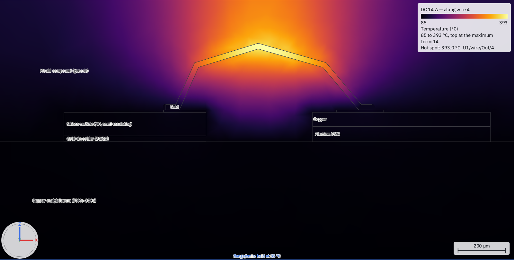
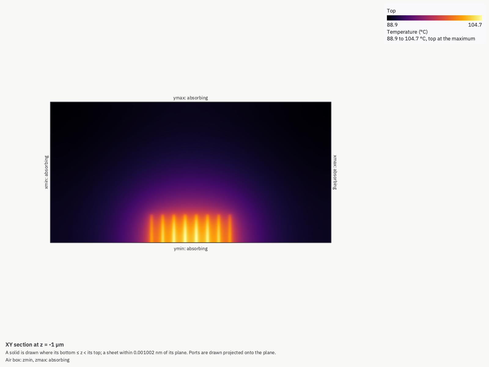
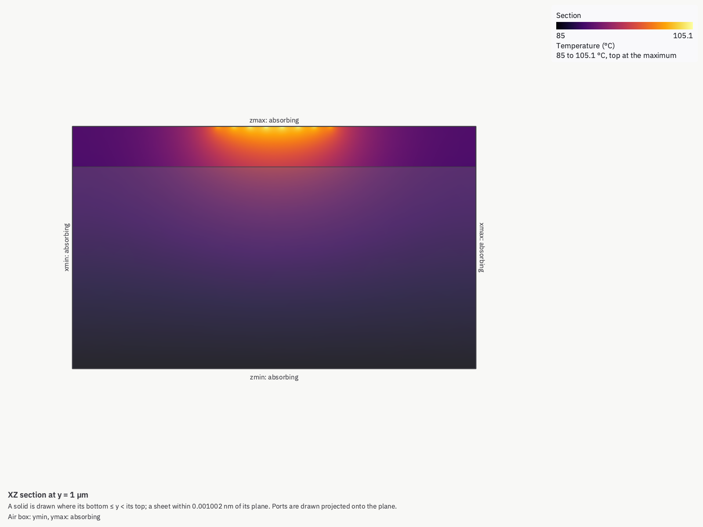
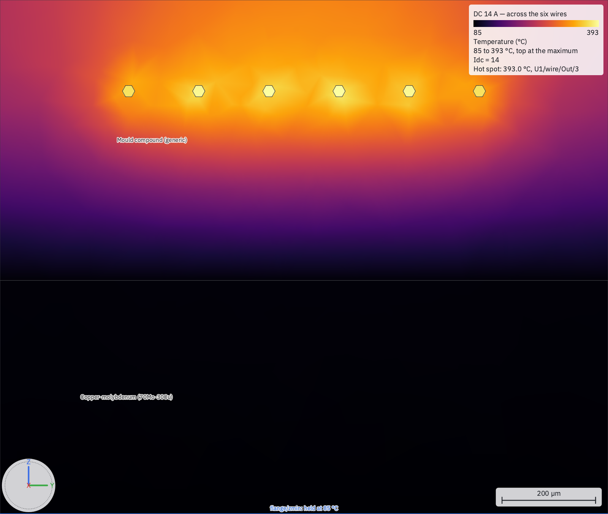
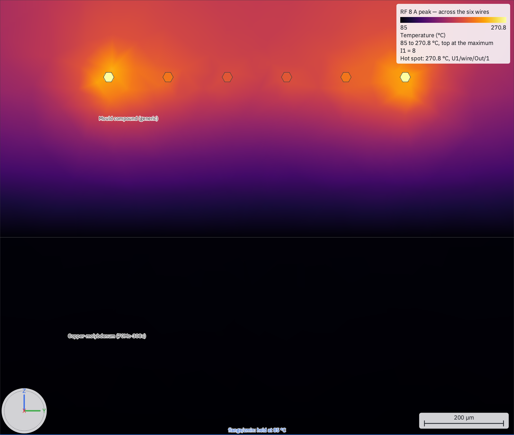
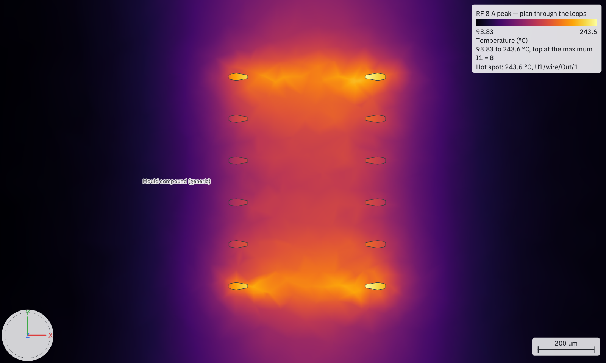

Thermal: temperature on the 3D model
The same 3D model that is solved for S-parameters is solved for heat — heat sources, probes, boundaries and contacts in the view, their values in a thermal setup. What a thermal run is, what it models and what it does not, taught through the three thermal examples with their measured numbers.
A thermal setup solves the steady temperature of a 3D view: every solid conducts heat, air does not, and heat enters
where you put a heat source and leaves through the faces you hold at a temperature or cool by convection. It is the same
model an EM setup solves — the geometry, the materials and the ports are shared — so one .c3d carries its thermal setups
beside its EM ones. What each place is and how to draw it is in The 3D Editor ▸
Temperature; this page is what the run does with them, and what three worked examples measured.

Thermal needs Gmsh, the mesher Palace uses; circuitRF's own solver does the rest. The first run without Gmsh offers to install it.
What a thermal run solves
- Conduction through every meshed solid, with each material's conductivity k from its record — a table k(T) when the material states one, and then a Newton loop over temperature (the run's notes give its steps). Silicon carbide, gallium nitride, gold and copper carry tables in circuitRF's generic library; that is why an Rth changes with power.
- Contacts. Two touching solids conduct perfectly unless a resistance is stated: a technology's ThermalInterfaces for a pair of materials (the generic library's GaN/SiC nucleation layer, 3.3E-08 m²·K/W), or a document's override for one contact. A thin bond line — a die attach, a solder layer — is usually best stated this way, as its thickness over its conductivity, rather than drawn (see the mesh).
- Boundaries: fixed temperature, convection, or insulated (every face nothing names). Set by right-clicking a face; click a boundary's tint (or its row) to edit its kind and values in Properties.
- Symmetry planes: model half or a quarter; measures read
SymmetryFactorfor the whole device. A plane is drawn hatched where it cuts the model, and its position is edited in Properties — it must stay on the model's extent.
Every run reports its energy balance — the heat that went in against the heat that left — in its notes.
Leaving something out. Untick an object's, a placed cell's or a heat source's Model (in Properties, or on its right-click menu — see Model) to run without it while it stays drawn: the object is not meshed, and the source puts no power in. The run's notes name what was left out. Anything that still refers to it is refused, naming both — a heat source spread through or lying in it, a probe reading it, a contact resistance naming it, a boundary on one of its faces — so a temperature is never read off a model you did not mean to solve. An effective block's own Enabled is its switch, shown in Properties as Model.
Worked example: Die to Heatsink
Tools ▸ Examples ▸ Thermal: Die to Heatsink. A GaN-on-SiC die (its transistor one 0.8 × 0.25 mm heat-source sheet) on a
copper–molybdenum flange, the flange on a two-layer board with a 5 × 3 field of plated vias, the board on a 100 µm thermal
interface material on a heatsink held at 85 °C. The die attach and the flange solder are contact resistances. Pdiss sweeps
from 3 W to 11 W; the run takes about 1 min 17 s and 1.1 GB on an Apple M4 (the Debug build), on 543,980 tetrahedra.
| Pdiss | Die top | Rth_jc | Rth_ja |
|---|---|---|---|
| 3 W | 116.2 °C | 5.08 K/W | — |
| 11 W | 207.9 °C | 5.83 K/W | 11.18 K/W |
What "case" means is a choice. Rth_jc reads the case as the flange bottom's average (143.8 °C at 11 W); against the
flange bottom's hottest point, where a thermocouple under the die would sit, it is 5.42 K/W. A datasheet's number means one
of these, and they differ by about 8 %.
An external check. The heat crosses the interface material in one dimension, so its top must average 85 + 11 × 100 µm / (3 W/(m·K) × 80 mm²) = 89.58 °C at 11 W — and the probe on it reads exactly that.
The via field as a block. Enabling the view's effective block over the vias reads the die at 194.0 °C (Rth_ja 9.91 K/W): 13.9 K cooler than the vias drawn, and in 3 min 10 s rather than 1 min 17 s on this board. The block is an approximation that runs cool; it pays where there are hundreds of vias.
Worked example: Channel vs Surface
Tools ▸ Examples ▸ Thermal: Channel vs Surface. One GaN finger's unit cell — SiC substrate, GaN epitaxy with the library's GaN/SiC interface resistance, passivation, gate, field plate, source and drain — with the finger's heat (0.25 W, 5 W/mm) in a 0.5 × 0.25 µm channel at the drain-side edge of the gate, the substrate's bottom at 85 °C, and a symmetry plane at the finger's mid-width. About 3 min 28 s and 2.0 GB, on 216,837 tetrahedra.
The channel reaches 202.7 °C (Rth_ch 470.9 K/W for the whole finger). An IR spot probe — a disk on the passivation's
top, straight over the channel, the average an infrared microscope reports — reads 182.5 °C through a 3 µm spot: an offset
of 20.2 K. The field plate hides the channel, and the passivation above it is reached only by heat that spreads. The spot's
size moves the answer more than anything else:
| IR spot | Channel − spot |
|---|---|
| 1 µm | 18.1 K |
| 3 µm | 20.2 K |
| 10 µm | 30.1 K |
So an IR temperature needs its spot size, and the correction to the channel belongs to that spot.
Order 2 matters here. The same mesh at element order 1 runs in 12 s but reads the channel at 199.5 °C, the offset at
18.4 K and Rth_ch at 458.2 K/W: 9 % low on the offset. A sub-micrometre heat source needs the curvature order 2 carries.
The workspace's second cell, Eight Fingers, is the plan of an eight-finger array (0.25 W a finger): the fourth finger reaches 105.1 °C and the edge one 101.6 °C, 3.5 K cooler (58,032 tetrahedra; it solves in less time than One Finger), because the middle of an array has neighbours on both sides.


Rth matrix, Z_th and pulses
A setup may ask for the Rth matrix across its heat sources — R_ij, the rise of source i's place per watt in source j, with
every boundary made homogeneous so it is a property of the structure — and for the thermal impedance Z_th(jω), which is
fitted as a passive Foster network per source and written as a .cnl you can simulate. A pulse train (period, duty)
gives each place's periodic peak, single-pulse rise and average with no transient solve, from Z_th solved at the harmonics
of 1/period. It does not use a fit of the heat that travels from one source to another. Details and the
gestures: The 3D Editor ▸ Rth, Z_th and pulses.
In Eight Fingers (a half model, so each figure is per watt in the modelled half of a finger), an edge finger's own resistance is 52.91 K/W, the fourth finger's 53.17 K/W, and a neighbour adds 20.52 K/W. With all eight on, the edge finger rises 15.84 K and the fourth 19.13 K. A 1 ms, 10 % duty pulse train takes the fourth finger to a peak of 90.71 °C; a single pulse reaches 90.62 °C, and the average is 85.75 °C. The heat that crosses from the edge finger arrives late, and it is counted exactly because the pulse is solved at the harmonics of 1 kHz rather than read from a fitted network.
Conductive balance: current, and bond wires
A thermal setup may also state currents at ports. The current flows through the model's metal and its bond wires and heats them — electrothermal, in circuitRF's word, and solved by conductive balance: one Newton loop over temperature and potential, with each metal's electrical conductivity σ(T) and each material's k(T) following the temperature. Each follows it unless its switch on the setup's Balance section is off, so the two contributions can be compared one at a time. For a quick estimate with no mesh, a schematic wBond solves its own wires' temperature from every DC and large-signal run, with no mould around them — see wBond ▸ Wire temperature.
- Bond wires are solved as one-dimensional elements along their true 3D centrelines, their area always πd²/4 whatever the section their EM model uses, coupled to the pads they bond to and to the mould compound they run through. The temperature along each wire is drawn on the wire.
- Runaway is an answer. Above a current, no steady state exists between fixed-temperature ends: the run brackets that current and reports it rather than failing. A metal hotter than the top of its conductivity table (gold's ends at 1,027 °C, just below melting) is past what its material states, and is not taken as a steady state.
- A pad or a lead is one potential when its resistance at 20 °C is below 1 % of the least-resistive wire's (Balance ▸ EquipotentialBelow; 0 solves every conductor's potential in 3D). The run's notes name each conductor, its resistance, and which way it went.
- Ports referenced to ground. Two ports that each run from a conductor to the flange across an insulating die have no path alone — one's current returns through the other. They are solved as a balanced pair: the currents into each conductor group must sum to zero (to 0.1 % of the largest), or the run refuses, naming the ports.
- Harmonic currents heat the wires only, each harmonic at its own skin-effect resistance, each stated Peak or RMS
(never inferred); a port's harmonics are shared among the wires of its array by their inductance. A
.wBond's wires are shared over the ground plane their.wBondstates. Wires drawn in the 3D view are shared in free space unless the document states aWireGroundPlane, either a height ({ "Z": … }) or a horizontal conductor face ("carrier/zmax"). It is never guessed from what lies below the pads, andcheckrefuses one that is above a drawn wire. - From a circuit: a setup can take its currents from a harmonic-balance sweep of a schematic whose S-parameter block is this view's EM result — pin p is port p — and solve the wires at every drive level, with the circuit's measures beside the temperatures. Nothing goes back into the circuit.
Worked example: Output Wires
Tools ▸ Examples ▸ Thermal: Output Wires. Six 1 mil gold wires, wedge-bonded from a drain pad on a SiC die to a copper package
lead, all of it embedded in a mould compound — the overmold — over a copper–molybdenum flange held at 85 °C. The die, its
pad and the lead finger are a layout; the wires are its .wBond; the rest is drawn in the 3D view. The mould's glass transition
(150 °C) is every wire probe's Limit. Each setup runs in seconds on an Apple M4 (the Release build): DcSweep in 21 s, on
123,818 tetrahedra.
DC, up to runaway. The six wires share a DC current almost equally, and the centre ones run hottest — the mould between their neighbours is warmer:
| Idc (six wires) | Hottest wire | An edge wire |
|---|---|---|
| 6 A | 119.8 °C | 117.0 °C |
| 10 A | 197.3 °C | 188.7 °C |
| 14 A | 393.0 °C | 371.5 °C |
Above 16.69 A there is no steady state, and the run says so rather than failing: the last converged point is 16.62 A, with the hottest wire at 944 °C. At 10 A the switches show what drives it: the hottest wire reads 197.3 °C with both on, 194.8 °C with k(T) off and 158.7 °C with σ(T) off — nearly all of it is gold's resistance rising with temperature.

RF, at 2 GHz. At RF the current divides by the wires' inductance, and the edge wires carry the most: at 8 A peak the edge wires reach 270.8 °C and the centre ones 199.5 °C; at 12 A, 594.4 °C against 366.7 °C.


From a power amplifier. FromHB takes its currents from a harmonic-balance drive sweep of the Amplifier test bench's schematic — a generic
FET on this view's EM result, into a 5 Ω load — at every drive level. Both ports are referenced to the flange, so they are solved
as a balanced pair. At 28 dBm drive the circuit gives 49.51 dBm from 4.43 A, and the edge wires reach 205.1 °C (the centre ones
164.7 °C); the run takes 12 s, and states when each wire passes its limit:
"Probe 'w1' reaches its limit of 150 °C at Pin ≈ 13.11 (Pout_dBm ≈ 47.14, Id_A ≈ 3.242, Eff ≈ 40.2)." Run the EM setup first (1 min 37 s and 5.8 GB in Palace at the Draft preset;
its series inductance for the six wires is 228.5 pH at 2 GHz).
The quick check, with no 3D run. The Amplifier Wires bench drives the same sweep through a wBond component carrying the six
wires of Pads.wBond, its temperature solved between 125 °C at the die and 85 °C at the lead
(wBond ▸ Wire temperature): the whole sweep takes 0.4 s, and WireTemp reads 166.5 °C at 10 dBm,
464.9 °C at 20 dBm and 503.0 °C at 28 dBm. That is hotter than the 205.1 °C above because no heat leaves through a wire's sides —
there is no mould — and from a circuit whose output network is the wires alone, which at 28 dBm gives 51.32 dBm from 5.37 A.
Checks. The same row drawn as 3D-view wires (the second cell, Drawn Wires) reads 393.0 °C at 14 A and runs away at the same current. Brief 72's closed form for one isolated wire in air, its ends at the heels' temperature, reads 642.2 °C at the same current and runs away at 3.15 A per wire: the overmold takes most of the rise. Recomputing the RF share with each wire's hot resistance moves any wire's current by at most 0.83 %.
What was traded for speed. The die pad (0.071 mΩ) and the lead (0.047 mΩ) are solved as one potential each, below 1 % of a
wire's 47.7 mΩ (Balance ▸ EquipotentialBelow; 0 solves them in 3D: 42 s, and 393.3 °C for the hottest wire at 14 A). The EM
setup's Standard preset takes 10 min 10 s and 7.6 GB, reads 233.6 pH, and moves the edge wire at 28 dBm to 201.2 °C and its
limit to Pin ≈ 13.18.
The mesh, and what a run costs
Each solid is meshed at an element size set by its thinnest dimension (at least MinThroughThickness elements through it, 2 unless stated), across its whole extent; a heat source's surroundings are refined to its own size, and a mesh region is refined to the size you give it. So a layer that is thin AND wide is the expensive thing in a thermal model: a 2 µm epitaxial layer over a millimetre die, or a 20 µm attach over a flange, forces micrometre elements everywhere it reaches. The remedies, in order:
- state a thin bond line as a contact resistance (its thickness over its conductivity) instead of drawing it;
- draw fine detail only where it is — Channel vs Surface draws the epitaxy on a 20 µm cell, Die to Heatsink does not draw it;
- set MinThroughThickness to 1 (both examples do);
- choose element order by what you read: order 1 is several times faster, and on Die to Heatsink it reads the junction 2.5 % cool (207.9 °C against 210.9 °C at order 2, Rth_jc 5.83 against 5.99 K/W and Rth_ja 11.18 against 11.45 K/W; the order-2 run took 17 min 55 s and 8.3 GB); on Channel vs Surface order 2 is kept.
circuitrf explain <view> --analysis <setup> estimates the tetrahedra, unknowns and memory before anything is meshed, and the
setup's Mesh ▸ Check meshes again with every size × 0.7 and reports how far each probe moved — on Die to Heatsink,
+0.13 °C (+0.41 % of its rise), in 2 min 57 s. That check refines the same elements; it does not measure the difference between orders.
What is not modelled
- Radiation. Heat leaves by conduction to a fixed face and by convection only.
- RF loss anywhere but the bond wires. Harmonic currents heat wires; a transmission line's or a package's RF loss is not a heat source unless you state it as one.
- The loop back into the circuit. A temperature does not change the harmonic-balance solution it came from — not the wires' resistance, not the transistor.
- Time. There is no transient solver: a pulse's temperatures come from the fitted Z_th in closed form.
Is this solved?
A thermal result is marked like an EM one: a circle on the 3D view's tab and workspace tree row while it matches the model, and a status line on the setup's card. A thermal run that did not converge carries a star. Each setup is judged on what it reads: an EM port or another setup never makes a thermal result out of date, unless one of its currents is driven through that port. The full list is in 3D EM ▸ Is this solved?.
From the command line
circuitrf em <view.c3d> --setup <name> runs a thermal setup exactly as Run does, writes <cell> <setup>.thermal.npy and the
temperature field beside it, and prints the probes, the measures and (when asked for) the Rth matrix. check validates the
places and the setup, and explain --analysis reports what the run will do — materials and their k, contacts in force,
boundaries, the sweep, and the estimated size. See The command line.